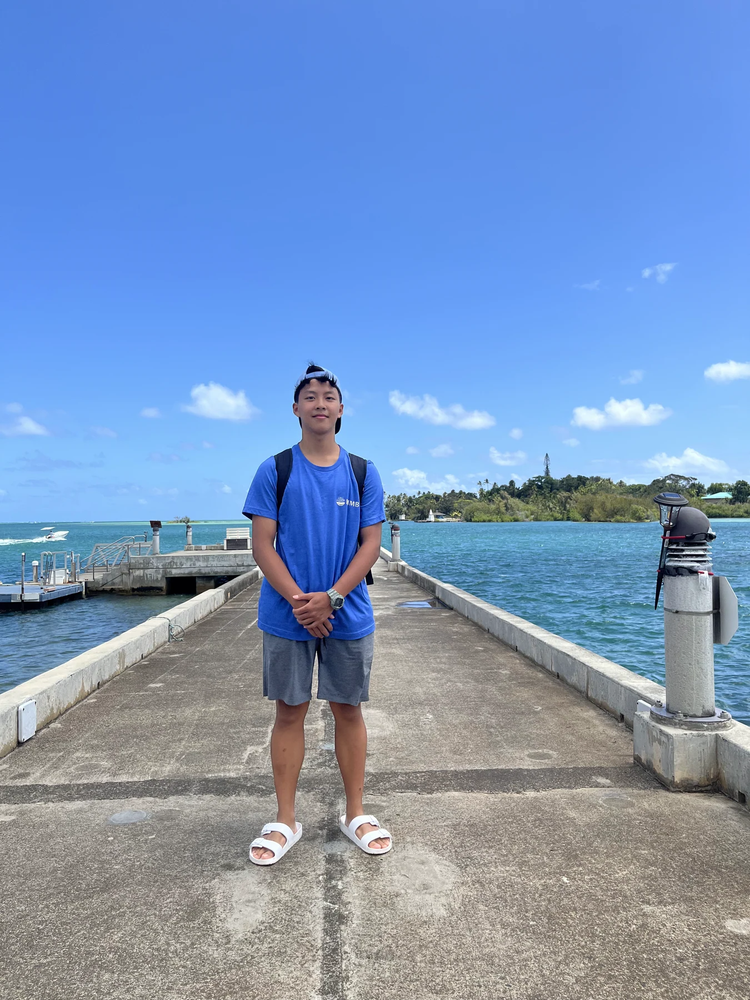

About / Wego High School International Program · Grade 12
Benjamin Sung.
 Wego / International Program
Wego / International Program
Chi-Hsuan Sung · 宋其軒
I like using computation and engineering to understand and interact with physical, environmental, and biological systems.
What connects the work
Build. Test.
Understand.
Programming first taught me to break complex problems into smaller parts. Robotics showed me that code also has to work with motors, mechanisms, sensors, power, and real-world uncertainty.
That interest expanded through SDG engineering projects and marine-conservation experiences. At NMMBA and HIMB, I saw how environmental science connects with sensing, mapping, AI, and engineering.
I now carry those questions into an independent aquarium fish-detection system and an autonomous mobile robot development platform. Robotics and computer vision are tools that connect my interests—not substitutes for the physical and environmental problems themselves.
01 Threads of development
From problem solving
to systems thinking.
Programming
C++ and algorithms through competitive programming and the SPROUT program; advancement to USACO Gold.
VEX & SDG projects
Competition robots, Heron’s Fountain, microplastic separation, the Ocean Challenge, and an AI Fridge. Testing and rebuilding made iteration central to the work.
NMMBA & HIMB
Completed the Taiwan Global Pathfinders program, connecting coral conservation with measurement and engineering.
NYCU lab learning
YOLO workflows at the Adaptive Photonics Laboratory, Tainan, with day-to-day guidance mainly from a senior lab member.
Independent systems
Ongoing aquarium detection and tracking tests, alongside a reusable 24V AMR platform with advanced autonomy still under development.
02 Tools & areas of experience
A practical toolkit.
- Programming
- C++ / Python · data structures · algorithms
- Robotics
- PROS · PID · odometry · STM32 · Jetson · ROS 2 Humble
- Vision
- YOLO · annotation · class mapping · data cleaning · hard-negative refinement · independent evaluation · ByteTrack
- Mechanical
- Mechanism assembly and modification · motors · encoders · power integration · iterative testing
- Environment
- Learning exposure to water-quality monitoring, CoralWatch, GIS / R, SfM, ReefCloud, and aerial monitoring concepts
03 Connecting my interests
Different disciplines.
A shared question.
Environmental Engineering and Mechanical Engineering are my central academic interests. Computer Science, Robotics, Computer Vision, Bioengineering, and Environmental Science offer additional ways to understand systems that compute, move, and live.
What connects them for me is the relationship between a model and the world it is meant to describe—or act on.
Preferred name: Benjamin Sung
Legal name: Chi-Hsuan Sung ·
宋其軒
A few frames from my life
Learning happens
with other people.